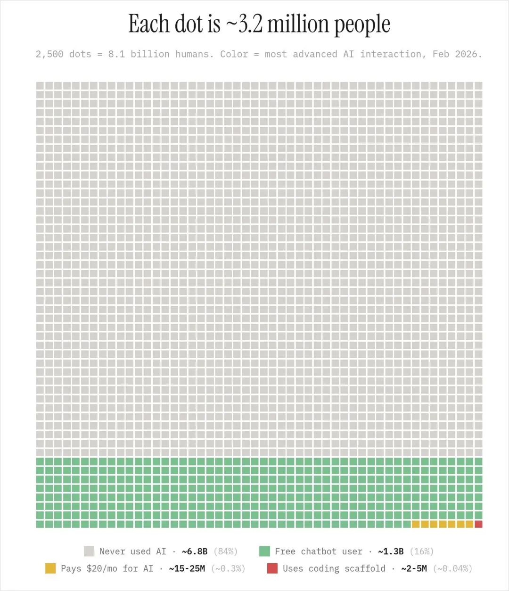
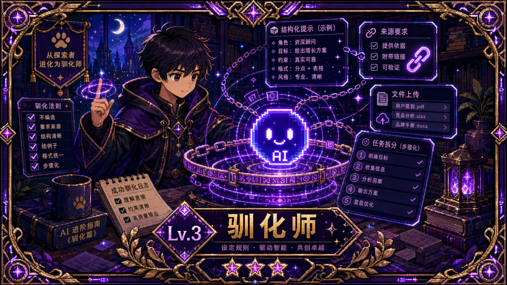
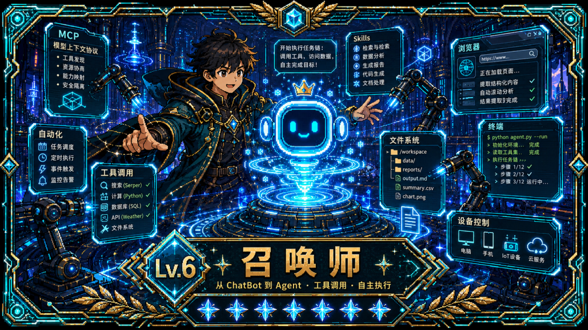

AI 使用熟练度 10 级体系：可控性 × 广度 × 形态 × 角色四维进阶路径
来源：微信公众号 归档日期：2026-05-11 抓取状态：成功 原文字符：9585｜配图：12 张
摘要速览
如何量化"你到底会不会用 AI"？从旁观者到一人军团，这条路上每一步的卡点在哪、下一步该怎么走？
核心内容
一、四个进阶维度
| 维度 | 低级表现 | 高级表现 |
|---|---|---|
| 可控性 | AI 乱编，不知道为什么 | 约束 AI，设计 Harness 让 AI 精准产出 |
| 广度 | 只在自己一亩三分地里用 | 借 AI 跨行业探索 |
| 形态 | 用 ChatBot 对话 | 用 Agent 跑长程任务 |
| 角色 | 消费别人的 Prompt | 创造自己的 Skill、沉淀自己的体系 |
四个维度不同步推进——可控性高但广度窄、广度大但角色一直是消费者，都很常见。
二、10 级体系
| 级别 | 名称 | 核心特征 |
|---|---|---|
| Lv.0 | 旁观者 | 知道 AI 但从未对过话；全球约 80% 的人 |
| Lv.1 | 尝鲜者 | "帮我写个 XX"→等结果→能用就用，不能用就算；AI = 高级搜索引擎 |
| Lv.2 | 摸索者 | 开始追问和补背景，知道效果好坏跟自己的问法有关；会对比 2-3 款产品 |
| Lv.3 | 探险者 | 开始跨界探索（本行之外），广度维度启动；开始发现 AI 能做的远超想象 |
| Lv.4 | 实战者 | 工作场景常态化；知道上下文/背景/约束很重要；大部分普通白领现在的位置 |
| Lv.5 | 设计者 | 开始设计任务流程，不只是问问题；会设计 ChatBot 的 Prompt、喂上下文文档 |
| Lv.6 | 驯化者 | 从 ChatBot 进入 Agent；这是整个 10 级里认知框架最震撼的一跳 |
| Lv.7 | 铸造师 | 开始封装自己的 Skill；设计 AI 反馈循环（产出→自检→喂回→迭代）；投资基础设施 |
| Lv.8 | 造物主 | 创造者分叉：技术创造者（Claude Code / Codex 写产品）VS 艺术创造者（Seedance / 可灵做短片）；AI 已是工作方式本身 |
| Lv.9 | 觉醒者 | 四维度全部拉满融合；遇到任何问题第一反应是"我和 AI 怎么一起做到最好"；工作方式已无法向不用 AI 的人解释 |
| Lv.10 | 一人军团 | 一个人对标几十人团队；有 Skill 库 + Prompt 方法论 + Agent 工作流 + 知识体系 + 审美和品味；问题从"怎么用好 AI"变成"我要成为什么样的人" |
三、关键洞察
- Lv.6 是最大的跨越：ChatBot → Agent 不只是效率变化，是对 AI 能做什么的整个认知框架迭代
- Lv.7 才是真正的复利曲线起点：短期比 Lv.3 的人还慢（在改 Skill / 设计自动化），但每次同类任务成本指数下降
- Lv.10 的本质不是工具差异：工具平权之后，差距来自这个人脑子里装的东西——对世界的理解、审美、价值排序
- AI 的进化不停：这不是学一次就放在那的技能，人与 AI 的关系本身也在进化
可执行启发
（待补充）
我的想法
（待补充）
为什么有用
提供了一套具体可操作的自我定位框架，不只是"你会不会用 AI"的模糊判断。四个维度的拆分让人能看到自己的不平衡点（比如可控性强但角色停在消费者），知道下一步具体该往哪走。适合用来和身边的人对齐认知、或者指导自己下一阶段的学习方向。
适用 / 不适用场景
- 适用：自我评估 AI 能力现状、给身边不知如何学 AI 的人指路、判断团队成员 AI 能力水位
- 不适用：不覆盖专业领域（如 AI 研究员、模型训练等），不是技术能力评级
原文沉淀
目录
今天想写个有趣的东西。
上周末正好出差，跟几个很久没见的老朋友吃饭，他们也带了点他们各自的朋友，人比较杂，然后呢，吃到一半，就聊到AI了。
一个朋友兴冲冲地说，他前两天用AI给老婆做了个结婚纪念日的小卡片，效果绝了，老婆都感动哭了。
另一个朋友马上说，说你应该建一个项目，把你跟你老婆的所有故事都丢进去，让Agent看完再去写，那才叫绝了。
然后不知道咋的又聊到了做PPT和查资料，另一个人说，现在的AI根本不能用，经常一本正经的胡编乱造，都在瞎说。
另一个人又立马接话，都2026年了，你用点好的AI，不可能。
然后就开始了激烈的争辩，大家都觉得自己很会用AI。
一片激烈中，好像听见隔壁桌的好像也在聊AI，说什么用AI学习和查资料，然后另一个人在科普小龙虾。
那一桌饭，我吃得有点恍惚。。。
但其实，大家都知道，同一个AI，同一个Agent，不同人用出来的效果差距可能非常非常的大，但是问题就在于，这个差距在哪呢？怎么量化呢？我们现在到底在什么阶段呢？下一步该怎么走呢？
很多人其实也经常会问我，教练，我想学AI，我应该咋学，每一次我都很头疼，我不知道该怎么回答，因为这个问题实在是太大了。
这次饭局回去后，我脑子里突然有了一个idea。
如果，我把这条路给具象化，变成一个类似于打游戏升阶的过程呢？如果，AI也有使用熟练度一说，他应该怎么分级呢？
我想了很久，我在脑子里把这三年来观察到的很多人，从我自己的同事，到公众号留言区每天问问题的读者，到我在不同场合里聊过天的人，都大概捋了一遍。
然后，我想出来了的四个进阶的维度，这四个维度，可以共同组成AI使用度的10个等级。
第一个维度是可控性。从最开始觉得AI瞎编、发散，到知道怎么约束它，知道怎么喂上下文，知道怎么设计harness让它精准产出。
第二个维度是广度。从最开始只在自己一亩三分地里用，到借着AI开始跨行业探索，从窄走向广。
第三个维度是形态。从用ChatBot到用Agent，从对话变成长程任务。
第四个维度是角色。从消费者到创造者，从用别人的Prompt，到做自己的Skill。
这四个维度，共同组成了10个等级。
四个维度不是同步推进的。你可能可控性很高，但广度很窄，整天就在自己的小圈子里转，你也可能广度很大，啥都想试试，但角色一直停留在消费者，从来没沉淀过自己的东西。
但综合起来，你能在这4条线上的位置，大致就能推出来你现在在第几级。
我自己想了好久，然后，通过这四个维度，把10个等级写出来了。
当然，写这个不是为了让大家焦虑，AI进展的太快了，我希望的是，在如今这个节点，可以你看完之后，能跟身边的人对一对，知道自己在哪儿，知道下一步要做啥，才能百尺竿头更进一步。
同时这里叠个甲，这个等级体系只是我自己为了分类和好玩，也只针对大多数的普通AI用户，不涉及一些专业的领域，如果有不同意见，那就是你对。
如果你也有朋友想问你，怎么学AI，怎么进步，你也可以把这篇文发给他们～
那，让我们开始。
Lv.0 旁观者
旁观者知道AI这个词，可能也看过一些新闻，但从来没有真正跟任何一个大模型对过话。
这个等级听起来离我们很远，但其实全球大概还有80%的人在这一级。
这时候，我又要掏出来这张图了。

不过对于国内来说，这一级的人应该已经越来越少了。
如果想从旁观者变成Lv.1，也特别简单，不需要纠结哪个AI最好，你现在就在手机应用商店搜豆包千问元宝DeepSeek啥的，哪个图标你觉得好看你就选哪个，下下来，打开，问它一句话，任何一句话都行，问问今天该穿啥都行。
迈出去，你就到Lv.1了。
Lv.1 尝鲜者
这一阶段，你开始用了。
用法基本上就是帮我写个XX然后等结果，来什么接什么，AI给啥用啥。
比如帮我写一封邮件，帮我总结一下这个文档，帮我想个方案。
你不会追问，不会补充背景，拿到结果直接copy，能用就用，不行就算了。
你对AI的评价取决于运气，它有时候好使有时候不好使，但你说不清楚这到底是为啥。
这个阶段对AI的感受是混沌的，觉得AI有时候挺聪明，有时候又瞎扯，还没有建立起比较稳定的使用习惯。
一般只用一个App，大概率是DeepSeek或者豆包，不太关心用的是哪个模型，也不太知道模型之间有什么区别。
坦率的讲，这个阶段的人，AI对他来说就是一个更高级一点的搜索引擎。
你会搜索，但，你还不太会提问。
Lv.2 对话者
这一阶段，你用出了一点感觉。
你开始意识到一件事，怎么问比问什么重要。
AI答得不好的时候，你不会再直接关掉了，而是会追问，比如“不对，我要的不是这个，我要的balbalabla”。
你会补充一些背景信息，然后，发现AI的产出明显变好了。
你开始看了一些抖音的视频，也看了一些小红书的帖子，你开始学会跟AI说“你的角色是……”“请用XX的口吻”“不要写太长”这类的指令。
你开始知道，哦，原来这个叫Prompt。
然后你发现了一件很有意思的事，就是给AI看一段参考资料之后，产出质量居然会有一个明显的跃升。
这个阶段的你，已经开始在工作的两三个场景里固定使用AI了，可能是写周报，可能是润色文案，可能是翻译。
但，你好像还防不住AI胡说八道，你的应对方式可能特别朴实，就是把同样的问题，再问一遍，或者换一个AI再问一遍，看哪个答案靠谱。
你踏上了控制力这条线的第一个台阶。
你也隐隐约约的感受到了"约束"这个词的存在，虽然你的约束还很粗糙。
Lv.3 驯化师

这是第一个真正的分水岭。
也恭喜你，你已经超越了将近70%的人了。
在一顿提问一顿使用AI之后，你心中的那道关于约束的枷锁被打破了。
你开始主动给AI立规矩。
比如在Prompt里加上“如果你不知道，请直接说不知道，不要编造”、“请提供来源链接”、“不确定的部分用[推测]标注”等等。
你知道开深度思考功能对哪些任务有用，数学和复杂推理一定要开，闲聊不开。
你终于知道，怎么让AI变得更加听话了，你开始给上下文、给例子、开始分布拆任务。
AI的产出，也终于从纯粹的随机，变成了大概率是可以用的。
你开始写结构化的Prompt，比如“按照这个格式输出”“参考这三个案例”“先列大纲让我确认再展开”。
你开始意识到原来不同模型是有差异的，于是，工具栈也开始分化了。文档总结用Kimi，写作用DeepSeek，做题用豆包。
你开始在AI产出的基础上迭代，而不是像一开始一样，一次不满意就放弃，不断的抽卡。
你也开始使用AI产品的一些进阶功能了，比如上传文件、联网搜索、记忆、自定义指令。
我个人体感，很多觉得自己AI用的挺不错的，在这一级。
当然这个并没有什么不好的，因为其实Lv.3已经能覆盖日常工作中80%的AI使用场景了。
但是。
很多人在这一级停下来了，因为接下来的Lv.4，真的需要一次心态上的跳跃。
Lv.4 越境者
你开始用AI，做自己专业以外的事了。
恭喜你，你已经超越将近90%的人了。
可能一个做市场的人，用AI写Python脚本跑数据分析。
一个程序员，用AI写商业方案和BP。
一个老师，用AI做海报设计。
你发现了一个让人兴奋到睡不着的事实，就是那些以前得找专门的人做的事情，现在好像，借助AI，你自己就能搞定。
你的能力边界开始大幅扩张。
你开始同时在三五个完全不同的场景里使用AI，你也会开始主动去学不同的AI工具。
你的工具栈大幅扩张，5到10个AI工具按场景分配，你开始为ChatGPT Plus、Cursor、Lovart、可灵等等真金白银付费。
你也开始，帮身边的人解决他们领域的问题。
这个阶段最典型的一句话或者一个念头就是：
我好像什么都能干了。
到了这一级，你跟之前的自己，就像是两个人。
这句话当然不完全对，但那个感觉是真实的。
AI给了你一张通向所有领域的门票，虽然你进了门之后大概率还是哪个领域的萌新，但你至少进得去了。
Lv.4，可以说是"广度"这条线的第一次爆发。
从Lv.3迈向Lv.4，真的需要你跨越心态上的那条鸿沟，同时，也对世界保持好奇。
Lv.5 织网者
到了这一级，你已经不再是那种只是有事问一下AI的萌新了。
AI被你嵌入到了日常工作流程里。
你有固定的用法、固定的Prompt、固定的流程，AI也从一个偶尔求助的对象，变成了跟你每天并肩工作的好搭档。
你有自己的Prompt模板库了，遇到同类任务直接套模板，不用每次从零开始。
你开始学会搭建工作流程，开始研究封装智能体，开始学会怎么把复杂任务拆成多步流水线，每一步交给AI处理不同的部分。
这时候，你也意识到了AI需要更多的Context才能更懂你，你也开始有意的收集数据来搭建自己的知识库，也开始使用记忆系统来管理长期的AI协作关系。
你的标志动作是，为不同的事建不同的项目。
写作有写作项目，里面塞了你过往的作品、风格指南、读者反馈。装修有装修项目，户型图、预算、建材报价都在里面。孩子学习有学习项目，错题集、教材、老师布置的作业都喂了进去。
Lv.5有一个很关键的变化，就是你已经不是纯粹的在使用AI了，你开始设计自己和AI之间的协作方式。
也开始有自己的方法论。
到后面，你第一次听到Context Engineering这个词的时候，有一瞬间，有那么一点恍惚。
原来，自己过去做的这些事，是叫这个名字。
Lv.6 召唤师

这一级，你终于跨过了ChatBot到Agent的那道门槛。
恭喜你，超越了将近97%的人。
你开始不在满足于使用ChatBot，你知道原来在那些对话式AI之上，还有一个很酷的东西叫Agent。
你开始尝试使用Claude Code、OpenClaw或者各种Agent类工具，你第一次体验到了一种完全不同的感觉，原来，AI不只是根据你的问题来进行产出，他可以直接跟你的设备进行交互，来直接帮你干活了。
它读文件、写代码、改代码、操作你的电脑、调用外部工具。
你开始接触MCP、Skills、工具调用这些概念，你知道了Agent和ChatBot的本质区别，Agent能多步执行、能调用工具、能自主决策。
你开始在你的小龙虾或者Agent里批量装一大堆的Skill，看了一眼，感觉快上百个了，你心满意足的觉得，你的Agent越来越牛逼了。
你可能第一次用AI做出了一个完整的小产品，一个网页、一个工具、一个自动化脚本、一个Chrome插件。
说真的，我觉得从ChatBot到Agent的跨越，可能会是整个10级里，最震撼的一次体验。
因为它改变的远远不止效率这一层面，还有，对AI能做什么的整个认知框架的一次迭代。
你也开始，学习怎么跟你的Agent进行互动，你发现，Agent比ChatBot好像难操控多了。
Lv.7 铸造师
这个阶段，你开始，学习如何设计Agent了。
你也开始发现，原来，我要开始学会自己创造了。
“这个我封装成Skill了”，这句话可能成了你日常中最多的一句话。
你开始有了几样属于自己的、沉淀下来的工具、还有Skill，这都是你自己，亲手创造出来的。
可能是一份每篇文章都用的写作Skill，可能是一个帮你自动回复询盘买家消息的客服Agent，可能是一份CLAUDE.md，可能是一套每周固定跑的工作流。
你开始知道怎么设计一个AI反馈循环，让AI产出，自己检查，把反馈喂回去让AI迭代，再检查，再迭代。
这个循环转起来之后，你的很多产出质量开始逼近甚至超过很多专业人士的水平。
你开始为下一次更省时间，投资基础设施。
整个本地的文件夹全部推倒重来，开始重构自己的文件管理体系，开始把Skill数量删到只剩下不到30个，开始研究怎么让把自己的一切工作都流程化。
你最初处理一个工作的时间，可能比Lv.3的人还要长的多的多，因为你在改Skill、让AI写代码设计自动化流程，但是下一次同样的功能，你很快就会做出来，甚至无需自己动手。
这就是AI时代的复利曲线。
Lv.8 造物主
到了这一级，你开始真正感受到的创造的乐趣和快感。
你大概已经超越了99%的人。
而且，到了Lv.8，一件非常有意思的事情开始发生了。
创造者开始分叉成两条路。
一条路是技术创造者。
他们开始深度地研究coding，用Claude Code、Codex这些工具，不断地构建各种各样的业务流、工作流和代码。
他们用Skill连接多个数据源和工具，搭建自己的AI工作台，他们设计多Agent协作流程，让不同的AI角色各司其职，他们为团队或组织构建AI基础设施，知识库、Skill库、自动化流水线。
他们，也开始使用AI，来Coding出，自己的产品。
而另一条路，是艺术创造者。
他们开始不断地用AI去创造出更牛的视频、更牛的短片、更牛的视觉作品。
他们在用Seedance、可灵这些工具，做出以前需要一整个制作团队才能完成的内容，他们开始研究AI辅助的分镜、剪辑、调色、配乐。
他们开始创造出越来越牛逼的作品，甚至，决定往电影进军。
更有牛逼的大神，同时双修两条路，技术和艺术双修，既可以Coding出无数人喜欢的产品，也能在电影节直接拿下短片大奖，一边不断coding产品，一边不断创造作品。
但不管走哪条路，Lv.8的人都有一个共同点。
他们已经很难区分工作时间和使用AI的时间了，因为几乎所有工作都有AI参与。
AI从此，不再是工具，而是工作方式本身。
而接下来，四个维度就将全部拉满。
控制力、广度、Agent能力、创造者身份，全部到位。
他们开始融合成一个东西，一个全新的群体。
Lv.9 觉醒者
四条线融合完成了。
AI成为了你思维方式的一部分。
你成为了那0.01%的人。
AI不再是工具，而是你思维方式的一部分。
你遇到任何问题，第一反应不再是我要怎么做，你开始下意识的思考，我可以和AI怎么一起把这件事做到最好。
你所有的创造过程都是人机协作原生的。
从构思阶段AI就在参与，也不是人想好了再交给AI执行。
你的工作方式已经很难向不用AI的人解释了，其实并不是因为多复杂，只是因为，底层的假设完全不一样了。
就像你很难跟一个不用电脑的人解释你为什么需要双显示器一样。
你创造方法论、创造工具、甚至创造新的工作范式，影响其他人使用AI的方式。
你不再纠结AI能不能替代人这个问题了。
因为你自己的工作方式，已经证明了一种人机共生的形态。
Lv.10 一人军团
最后一级。
你用了很久的AI以后，你发现，你自己发生了一次身份突变。
你的能力输出和你的产出，如果我们把时间倒回到3年前，你发现，你已经不能用“个人”这个词来衡量了。
一个人，同时在做内容、做产品、做设计、做运营、做数据分析、做商业决策。
也不是Lv.4那种好像懂一点的萌新，是每一项的产出质量，好像都能达到准专业水准。
因为你学会了，把自己的判断力和审美，通过AI复制到所有领域。
你有自己的Skill库、Prompt方法论、Agent工作流、知识体系、审美和品味。
这些东西组合在一起，构成了一套全新的你。
任何新任务进来，他无需从零开始学。
你只需要把任务接入自己的系统，系统帮来帮你消化陌生领域的知识，而你需要的，是负责做判断。
你写一篇文章的时候，AI负责调研、负责初稿、负责排版，你负责定选题角度和最终优化和审美。
你做一个产品的时候，AI负责写代码、做设计、跑数据，你负责定义这个东西到底该解决什么问题。
你做一个商业决策的时候，AI帮你穷举方案、模拟推演、整理竞品，你负责在所有信息之上做那个不可计算的判断。
传统公司的本质是什么？
是因为一个人干不了所有事，所以要雇人，要分工，要管理。
公司这个组织形态，从工业革命开始就是解决同一个问题的，也就是，个人能力的有限性。
但当AI把执行这一层的边际成本压到接近零的时候，这个前提就动摇了。
一个品味够好、判断力够强的人，配合他精心构建的AI系统，产出能力可以直接一个人，对标一个传统意义上，几十人的团队。
写在最后
当我们，站在Lv.10回头看。
去看整个Lv.0到Lv.9的路径，你可能会发现一个很有趣的事。
从Lv.0到Lv.9，讲的都是，你要怎么用好AI。
可是，在Lv.10。
你的问题变成了：** **
我到底要成为什么样的人。
当AI把执行力拉平之后，一百个人用同样的AI工具，产出差距依然是一百倍。
差距不来自工具，不来自技巧，不来自谁的Skill写得更花哨。
来自这个人脑子里装的东西。
他对世界的理解，他的审美，他的价值排序，他知道什么是好的。
这些东西，AI给不了。
工具平权的终局，其实，是人的不平权。
我不想去传递什么焦虑之类的。
但，我想说，AI的进化真的非常迅速。
它不是一个你学完就可以放在那里的技能。
它本身在进化，你和它的关系也在进化。
所以，在这个混沌的时代里，找到你想成为什么样的人。
然后，向前走。
别回头。
****以上，既然看到这里了，如果觉得不错，随手点个赞、在看、转发三连吧，如果想第一时间收到推送，也可以给我个星标⭐～谢谢你看我的文章，我们，下次再见。****
/ 作者：卡兹克
/ 投稿或爆料，请联系邮箱：wzglyay@virxact.com
归属：[[02-输入/按主题/AI与效率/_index|AI与效率]]